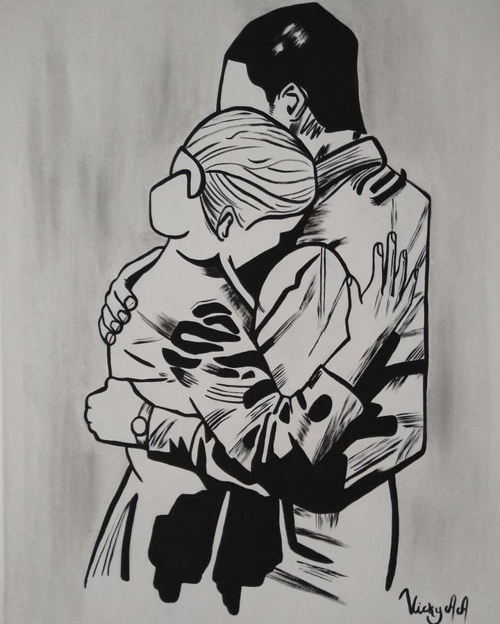
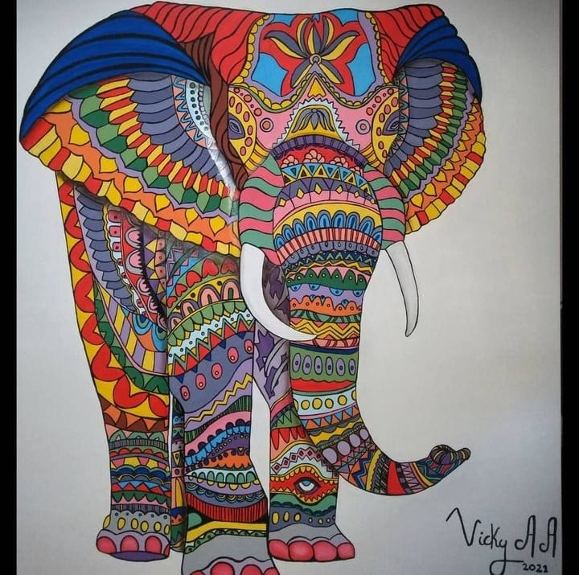

Técnicas de Dibujo y Pintura
Óleos
La pintura al óleo es una técnica pictórica en la que la materia colorida se obtiene de la mezcla del pigmento colorante con el oleo. Esta mezcla sirve para unir los distintos pigmentos entre ellos y estos con el soporte.

Acrílicos
Emplea los mismos pigmentos usados en óleo o acuarela pero diluidos en un aglutinante formado por una resina sintética hecha a partir del ácido acrílico. El resultado es soluble en agua y su secado extraordinariamente rápido y resistente a la oxidación.
Grafito
Por su forma, peso y tamaño, el lápiz es el instrumento de dibujo más manejable y fácil de usar, que no requiere un pulso excepcional para ser utilizado y que se borra con facilidad.
